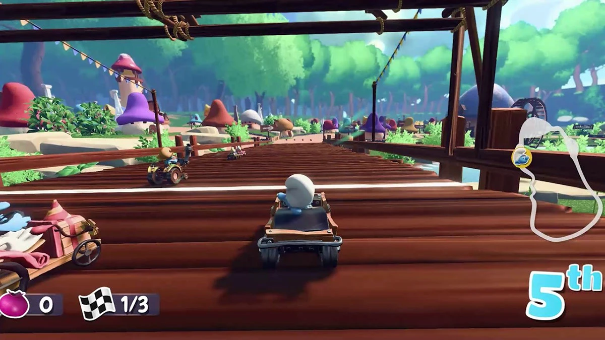
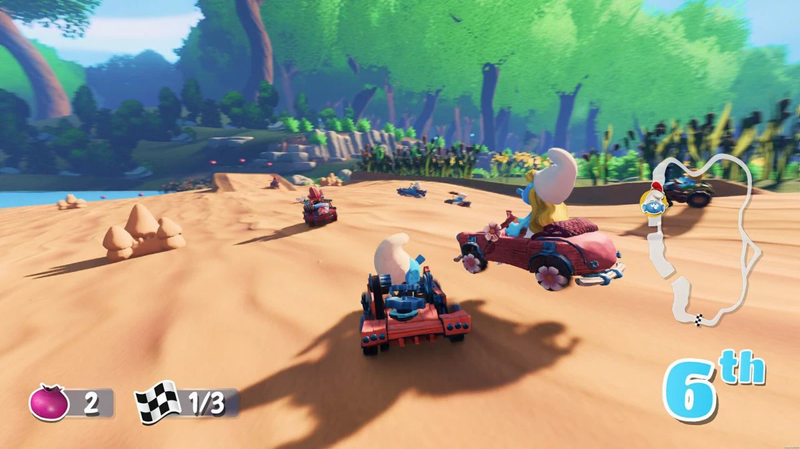
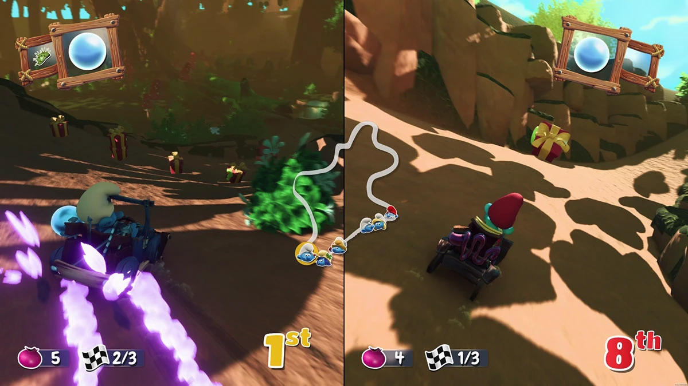
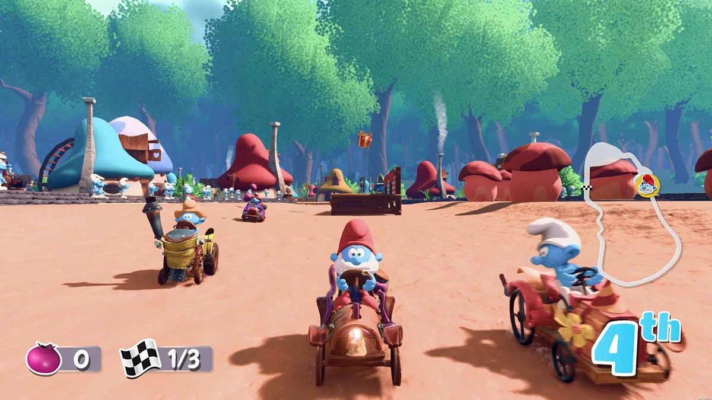
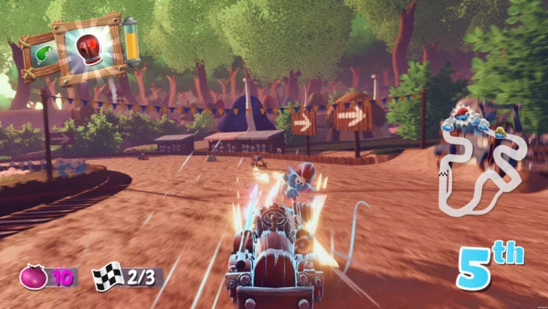
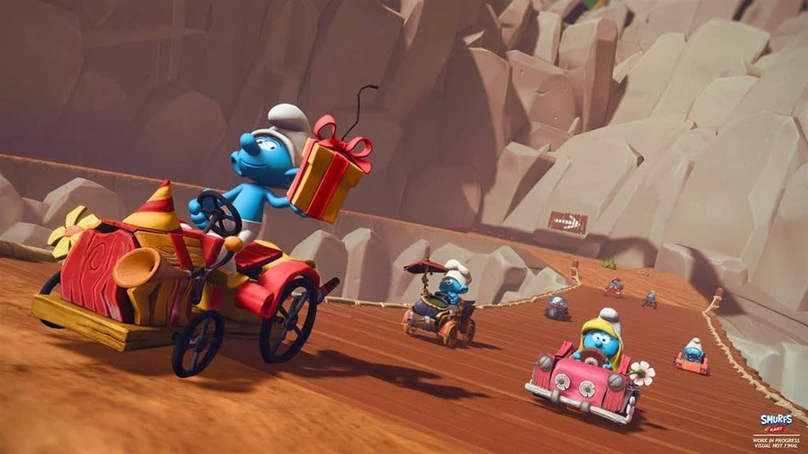
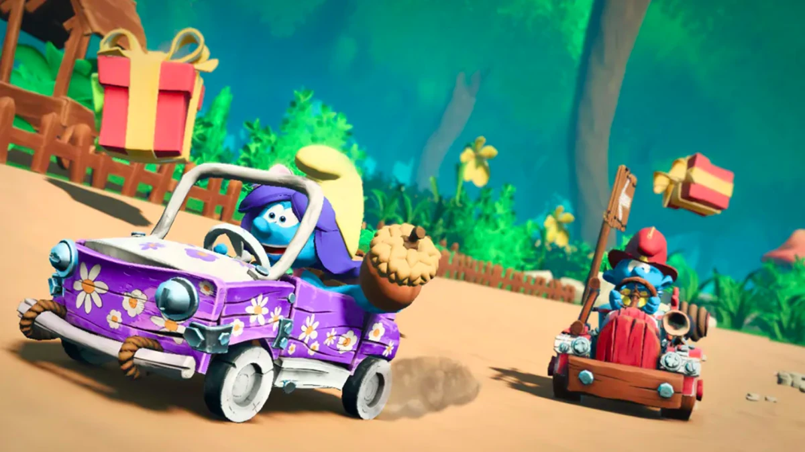
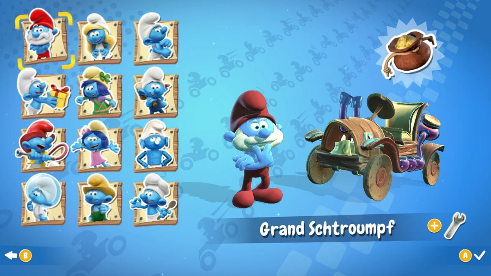
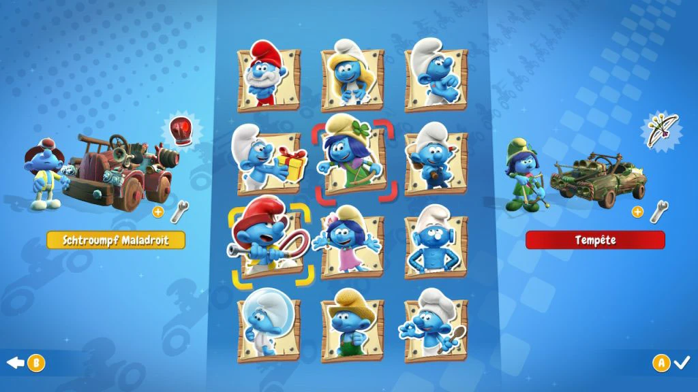

Smurfs Kart
Le projet
Smurfs Kart est un jeu de courses développé par Eden Games et publié par Microids. Le jeu est sorti uniquement sur Switch le 15 novembre 2022. Puis la version HD est sortie sur PlayStation, PC et Xbox le 22 août 2023.

Mon rôle
J'ai commencé le projet après la sortie sur Switch. Ma mission en tant que programmeur gameplay était d'adapter la version Switch sur les autres plateformes. J'ai participé aux portages de Smurfs Kart sur PlayStation 5, PlayStation 4, PC, Xbox One et Xbox Series X|S. Mes responsabilités comprenaient :
Adaptation technique : J’ai travaillé sur l’adaptation du code source pour garantir la compatibilité et la fluidité du jeu sur chaque plateforme. La version Switch est en 32 FPS. Les autres consoles sont en 64 FPS en HD.
Implémentation des succès : La version Switch n'a pas de succès. La version HD de Smurfs Kart comprend une trentaine de succès que j'ai implémentés et adaptés aux différents stores : Steam, PlayStation Store et Windows Store.
Implémentation des leaderboards : Le jeu possède un mode de jeu permettant de chronométrer son temps sur toutes les courses. Les joueurs peuvent partager en ligne leurs temps avec leurs amis et voir les meilleurs chronos.
Patch correctif pour la version Switch : J'ai assuré le debug de la version Switch qui avait plusieurs bugs mineurs lors de sa sortie.
Galerie









Et si on travaillait ensemble ?
Parlons de votre projet. Un jeu à développer, une équipe à accompagner, des cours à organiser ou un outil à créer ? Écrivez-moi.
Montpellier, France